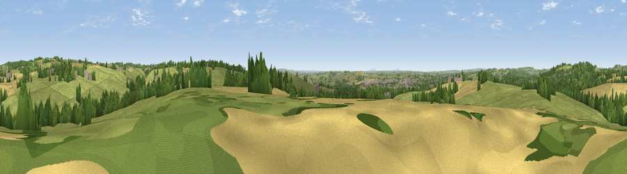

Viewpoint near Oulton
#22037 in England · top 27% of its area beats it · near OultonThe view, rendered

A 360° render of this exact spot computed from the terrain model, tree cover and land cover — summer colours, afternoon light, calibrated against photographs of famous viewpoints. Real trees, hedges and buildings will differ in detail.
The panorama
Grey silhouette: terrain skyline in each direction (720 bearings, Earth curvature and refraction included). Dashed green: skyline with trees (+15 m) and buildings (+8 m) as obstacles. Blue strip: how far the ground is visible on each bearing.
Where the view opens
Wedge length = distance to the farthest visible ground on that bearing (vegetation-aware). Rings at 10, 25 and 50 km.
What fills the view
64% grassland · 17% cropland · 15% woodland · 3% built-up
Angular shares of the visible panorama (visual magnitude), not map area. Landscape diversity 0.43 (0–1 Shannon).
Key numbers
More beautiful places nearby
The staircase of upgrades: each row has a higher view potential than everything closer. Driving times are estimates from straight-line distance, calibrated against real road routing — check an actual route before setting out.
| Place | Direction | Drive | Score |
|---|---|---|---|
| Viewpoint near Moddershall | NNE · 1 km | ~4 min | 52.3 |
| Viewpoint near Oulton | NW · 2 km | ~6 min | 55.2 |
| Peasley Bank | SSW · 5 km | ~11 min | 57.2 |
| Viewpoint near Swynnerton | WNW · 7 km | ~15 min | 59.4 |
| Viewpoint near Beech | WNW · 8 km | ~17 min | 62.1 |
| Viewpoint near Beech | WNW · 9 km | ~17 min | 63.7 |
| Viewpoint near Madeley Heath | NW · 18 km | ~31 min | 65.4 |
| Viewpoint near Madeley | WNW · 19 km | ~32 min | 66.7 |
52.90495, -2.11704 · source: screening · position refined by local search. Computed location — check access rights before visiting.